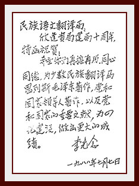

|  1988年，时任国家主席李先念写下亲笔信勉励翻译局 | 1998年，时任全国人大常委会副委员长田纪云题词 | 1998年，时任全国政协副主席赛福鼎·艾则孜题词 | ||
| 1998年，时任全国人大常委会副委员长布赫题词。 | 1998年，时任全国政协副主席阿沛·阿旺晋美为翻译局题词 | 1988年，时任国务委员司马义·艾买提发来亲笔信。 | ||
| 1998年，时任全国人大常委会副委员长铁木尔·达瓦买提发来祝贺信。 | ||||
| 1998年，时任全国政协副主席赵南起为翻译局题词。 | 1998年，时任全国政协副主席李兆焯为翻译局题词。 | 1988年，时任全国政协副主席赵朴初为翻译局题词 | ||